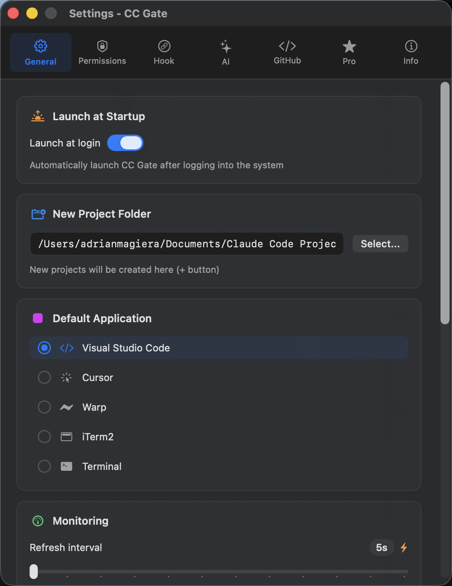
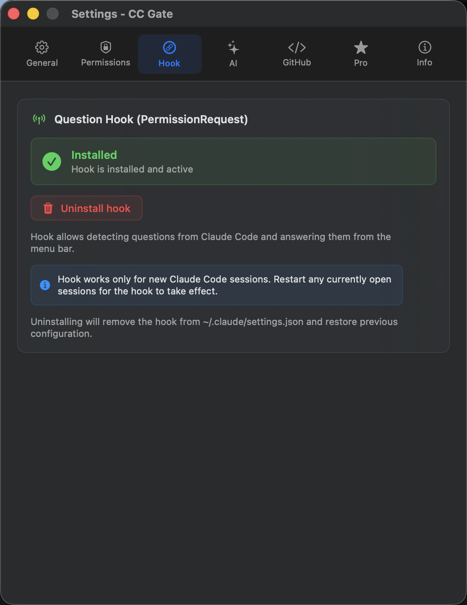
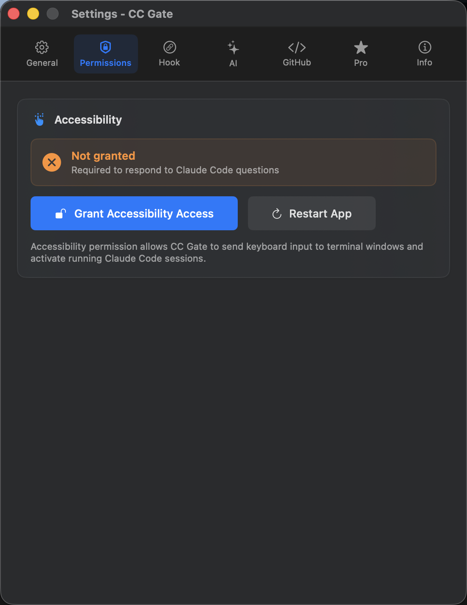
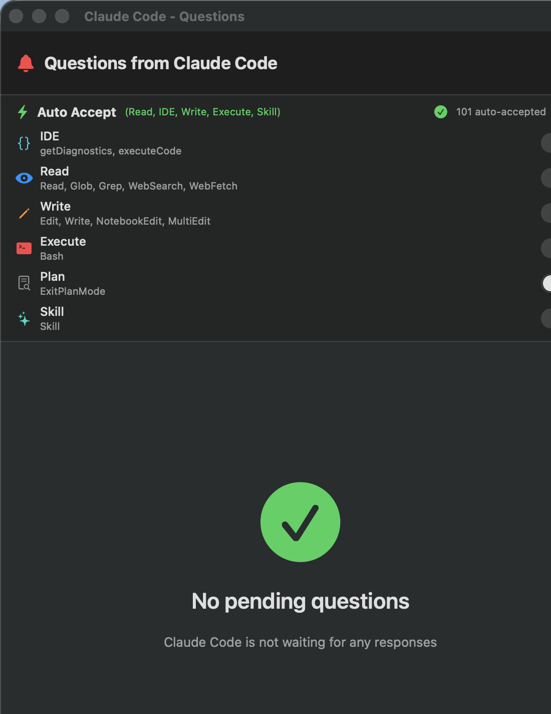

Getting Started
CC Gate is up and running in about two minutes — here's everything you need to do.
1. Download & Install
Drag to Applications
Open the downloaded file. A window appears — drag the CC Gate icon into the Applications folder shown next to it.
Launch CC Gate
Open your Applications folder and double-click CC Gate. If macOS says it can't be opened, right-click the icon and choose Open instead — then click Open again in the dialog.

2. Connect to Claude Code
For CC Gate to work with Claude Code, you connect them once — it takes about 10 seconds.
- Click the CC Gate icon in the menu bar to open the popup.
- Click the gear icon to open Settings.
- Go to the Hook tab.
- Click Install hook.
- You'll see a green "Installed" badge appear — you're connected.

3. Allow accessibility access (optional)
Only needed if you want CC Gate to type answers for you directly in the terminal. Most people skip this step — you can always come back to it later.
- Open Settings in CC Gate.
- Go to the Permissions tab.
- Click Grant Accessibility Access and follow the macOS prompt.

4. Turn on Auto-Accept
Without Auto-Accept, Claude Code will stop and ask for permission every time it wants to read a file, write code, or run a command. Turning on a few levels makes the whole experience much smoother.
- Click the bell icon in the top-right corner of the CC Gate popup.
- Toggle Read on — this lets Claude read and search files without interrupting you. It's completely safe.
- Optionally toggle Write on too, so Claude can edit files without asking each time.

You're all set!
That's everything. CC Gate is now watching your Claude Code sessions and ready to help. Here are a few things worth exploring next: